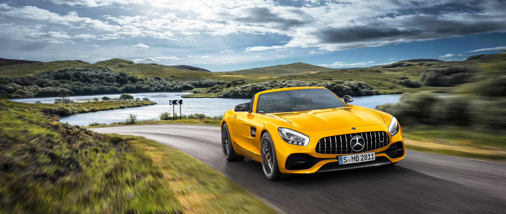
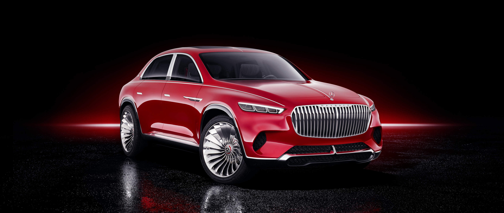

CO₂-Emissionen kombiniert: 262 g/km.*
The new Mercesdes-AMG GT S Roadster
Kraftstoffverbrauch kombiniert: 11,5 l/100 km;CO₂-Emissionen kombiniert: 262 g/km.*

CO₂-Emissionen kombiniert: 262 g/km.*
Vision Mercesdes-Maybach Ultimate Luxury.
Kraftstoffverbrauch kombiniert: 11,5 l/100 km;CO₂-Emissionen kombiniert: 262 g/km.*
A concept the embraces the whole: out and about with Kaviar Gauche
Kraftstoffverbrauch kombiniert: 11,5 l/100 km;CO₂-Emissionen kombiniert: 262 g/km.*
The new A-Class: The benchmark in the compact class.
Kraftstoffverbrauch kombiniert: 11,5 l/100 km;CO₂-Emissionen kombiniert: 262 g/km.*
Never Stop Improving. The new C-Class

Mercesdes-AMG GT 63 S 4MATIC+ Edition 1.
Kraftstoffverbrauch kombiniert: 11,5 l/100 km;CO₂-Emissionen kombiniert: 262 g/km.*